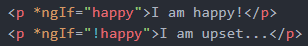

If you are implementing control flow statements in a project yourself, and notice an error: (Unexpected character "EOF" error in template)
Angular 17 users may need to add this line to their tsconfig.json file
I am happy!
} @else {I am upset...
}I am happy!
I am upset...
(yes, you could implement it this way as well)
